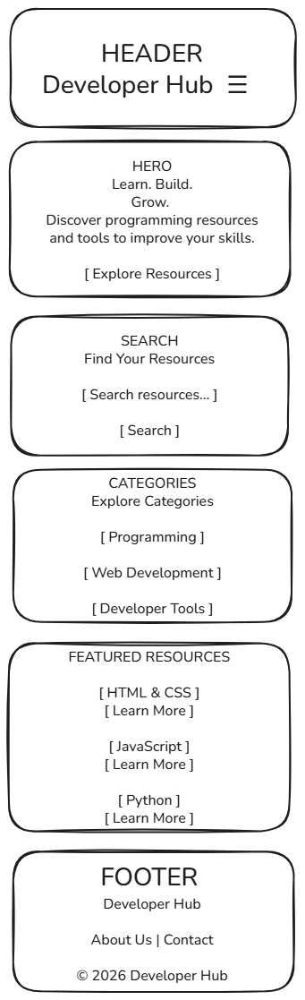
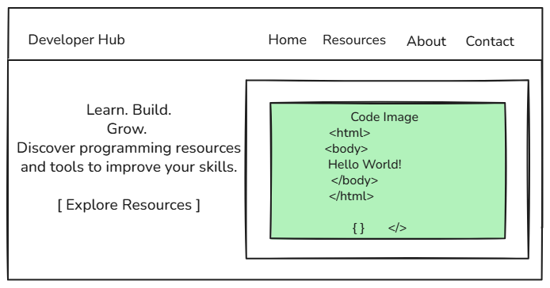

1. Site Name
Developer Hub
Developer Hub represents a central platform for students and beginner developers who want to learn programming, discover development tools, and explore useful resources.
Proposed domain: developerhub.dev
2. Site Purpose
Developer Hub is a website designed to help beginner developers and programming students discover programming languages, development tools, educational resources, and useful technologies.
The website provides information about different programming resources, allowing visitors to explore, learn, and find tools that support their software development journey.
3. Scenarios
- What programming languages should I learn as a beginner developer?
- What development tools can help me improve my programming skills?
- Where can I find useful resources to learn HTML, CSS, JavaScript, and Python?
- What technologies are commonly used in modern web development?
4. Color Schema
Navy Blue: #14213D
Used for headings and navigation backgrounds.
Teal: #007C83
Used for buttons, links, and visual accents.
Light Gray: #F4F7FA
Used for the main page background.
Dark Gray: #263238
Used for paragraphs and general text.
White: #FFFFFF
Used for cards and content sections.
5. Typography
Poppins
Poppins will be used for headings (H1, H2, and H3) to provide a modern and professional appearance.
Roboto
Roboto will be used for paragraphs, navigation, buttons, and general website content to ensure readability.
6. Wireframe
The following wireframes represent the planned homepage layout for mobile and desktop screens.
Mobile Wireframe

Desktop Wireframe
